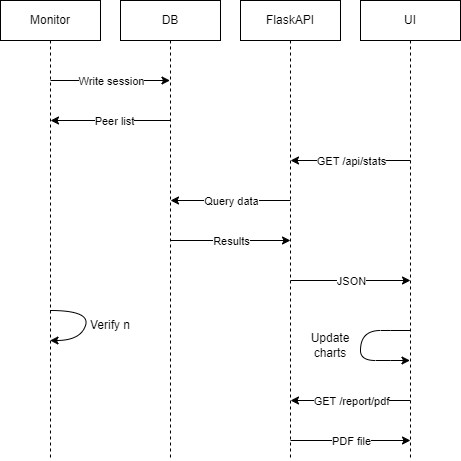
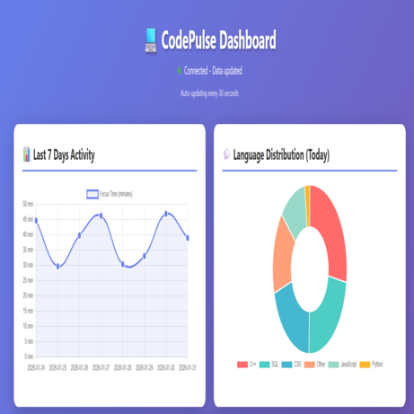
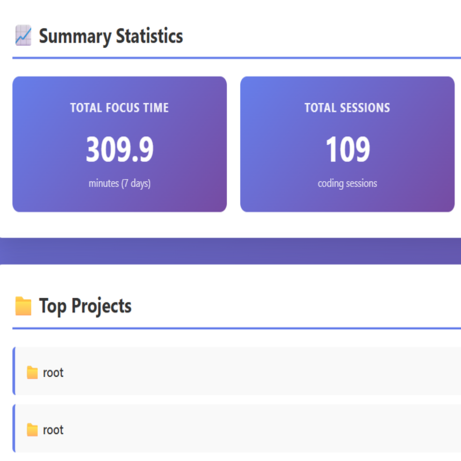

CodePulse - Offline Productivity Tracker
Tracks coding activity locally and surfaces real-time productivity stats.
Python | C++ | SQLite | JavaScript
GitHub



Features
- Tracks active window and file extension across editors
- Logs sessions locally (offline-first)
- Serves real-time stats via REST API
- Auto-updating dashboard charts
- Language and project breakdown
- PDF report export
How it works
- C++ monitor records sessions into SQLite
- API reads the DB and exposes endpoints
- Dashboard polls the API and updates charts
- Optional PDF export generates reports
Challenges
- Accurate active-window detection and noise filtering
- Keeping the dashboard responsive while querying the DB
- Generating clean PDFs with charts
Improvements
- Better editor detection rules
- Configurable tracking exclusions
- More analytics like streak goals and weekly trends